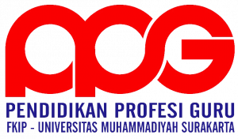

Welcome to

Saya adalah mahasiswa PPG Prajabatan Informatika asal Kabupaten Blora, Jawa Tengah, dan lulusan S1 Sistem Informasi Universitas Nahdlatul Ulama Surabaya (UNUSA). Saya memiliki pengalaman lebih dari 6 tahun sebagai Administrasi IT di Lembaga Sertifikasi Profesi (LSP) serta admin pelatihan di Lembaga Pelatihan Kerja (LPK). Pengalaman tersebut membentuk saya menjadi pribadi yang disiplin, bertanggung jawab, dan terbiasa menangani administrasi, pelatihan, dokumentasi, serta koordinasi program. Saya juga memiliki kemampuan di bidang Web Development (Laravel), System Analysis, Desain Grafis, dan IT Support, didukung sertifikasi BNSP Service Excellent dan System Analyst.
Ketertarikan saya menjadi guru berawal dari pengalaman mendampingi kegiatan pelatihan dan membantu peserta memahami materi hingga berkembang lebih percaya diri dan terampil. Pengalaman tersebut membuat saya menyadari bahwa berbagi ilmu dan mendampingi proses belajar memberikan kepuasan tersendiri. Karena itu, saya ingin berkontribusi menciptakan pembelajaran yang bermakna dengan memanfaatkan pengalaman di bidang teknologi informasi dan pelatihan agar peserta didik dapat berkembang dalam keterampilan, karakter, dan kesiapan menghadapi dunia nyata.
“Mengenal peserta didik dengan hati, mengajar dengan inovasi.”
Blora terkenal sebagai daerah penghasil kayu jati berkualitas tinggi. Banyak wilayahnya dikelilingi hutan jati milik Perhutani sehingga suasana alamnya khas dan masih asri.
Blora dikenal sebagai tempat kelahiran Pramoedya Ananta Toer, salah satu sastrawan terbesar Indonesia. Rumah dan kisah kehidupannya menjadi bagian penting sejarah sastra Indonesia.
Salah satu budaya paling khas adalah Barongan Blora, seni pertunjukan tradisional yang mirip singa barong dengan nuansa mistis, musik gamelan, dan atraksi budaya rakyat.
Universitas Muhammadiyah Surakarta merupakan Lembaga Pendidikan Tenaga Kependidikan (LPTK) yang berlokasi di Jl. A. Yani, Mendungan, Pabelan, Kec. Kartasura, Kabupaten Sukoharjo, Jawa Tengah 57169 yang berperan dalam membimbing mahasiswa menjadi calon pendidik profesional.
Praktik Pengalaman Lapangan Terbimbing (PPLT) dilaksanakan di SMP Muhammadiyah Program Khusus Kottabarat yang berlokasi di Jl. Pleret Raya Barat No.9, Banyuanyar, Kec. Banjarsari, Kota Surakarta, Jawa Tengah 57137, sebagai sarana mahasiswa untuk menerapkan ilmu dan keterampilan mengajar secara langsung di lingkungan pendidikan.
Selama PPL saya menyadari bahwa rencana pembelajaran adalah peta, bukan jalur yang harus diikuti secara kaku. Ketika kondisi kelas tidak sesuai dengan perencanaan, kemampuan beradaptasi menjadi faktor penting agar pembelajaran tetap berlangsung secara bermakna.
Pada siklus 3, misalnya, sebagian besar murid tidak membawa perangkat digital sehingga proyek kampanye digital yang telah dirancang tidak dapat dikerjakan secara langsung. Untuk mengatasi kondisi tersebut, kegiatan dialihkan menjadi perencanaan proyek menggunakan LKPD berbasis kertas. Meskipun sederhana, aktivitas ini tetap memungkinkan murid berdiskusi, berkolaborasi, menyusun ide, dan merancang produk yang akan dibuat.
Dari pengalaman tersebut saya belajar bahwa pembelajaran tidak harus selalu bergantung pada teknologi. Aktivitas unplugged dapat memberikan pengalaman belajar yang sama bermaknanya apabila dirancang dengan tujuan yang jelas dan tetap berpusat pada keterlibatan murid.
“Guru yang baik bukan yang selalu menjalankan rencana, tetapi yang mampu menjaga agar tujuan pembelajaran tetap tercapai ketika rencana tidak berjalan sesuai harapan.”
Pengalaman selama PPL menunjukkan bahwa kualitas hasil kerja murid sangat dipengaruhi oleh kejelasan instruksi yang diberikan guru. Murid cenderung mengerjakan tugas berdasarkan apa yang mereka pahami dari instruksi, bukan berdasarkan apa yang sebenarnya dimaksud oleh guru.
Pada siklus 2, saya meminta murid mencari artikel tentang dampak negatif informatika. Namun, instruksi tersebut ternyata ditafsirkan secara berbeda oleh murid. Sebagian besar hanya mencari daftar dampak negatif tanpa menghadirkan kasus nyata yang dapat dianalisis lebih lanjut. Akibatnya, bahan diskusi yang dibawa ke kelas kurang mendalam sehingga proses analisis dan diskusi kritis tidak berkembang secara optimal.
Pengalaman ini mengajarkan bahwa instruksi yang efektif harus memuat tujuan yang jelas, bentuk hasil yang diharapkan, contoh yang relevan, serta kriteria keberhasilan tugas. Dengan demikian, murid tidak perlu menebak-nebak apa yang harus mereka kerjakan dan dapat lebih fokus pada proses berpikir yang diharapkan.
“Instruksi yang baik bukan yang paling panjang, melainkan yang membuat murid memahami dengan jelas apa yang harus dilakukan.”
Salah satu tantangan yang konsisten saya temui selama PPL adalah pengelolaan kelas pada jam pelajaran setelah istirahat. Pada waktu tersebut, murid umumnya masih berada dalam suasana santai sehingga membutuhkan waktu transisi sebelum siap mengikuti pembelajaran.
Pada ketiga siklus pembelajaran, kondisi kelas pada awal pertemuan cenderung kurang kondusif karena murid masih berbicara dengan teman atau belum sepenuhnya fokus. Akibatnya, waktu yang seharusnya digunakan untuk kegiatan inti berkurang dan berdampak pada tahap presentasi, refleksi, serta penutup pembelajaran yang menjadi lebih singkat.
Dari pengalaman tersebut saya belajar bahwa pengelolaan waktu tidak dimulai ketika kegiatan inti berlangsung, tetapi sejak menit pertama pembelajaran dimulai. Ke depan, saya perlu menyiapkan rutinitas pembuka yang konsisten, menyediakan waktu cadangan (buffer time), dan menggunakan sinyal verbal maupun visual yang jelas untuk membantu murid segera beralih ke suasana belajar.
“Waktu yang hilang pada awal pembelajaran sulit digantikan pada akhir pembelajaran.”
Selama praktik mengajar, saya menemukan bahwa tidak semua murid dapat terlibat secara aktif hanya melalui instruksi yang disampaikan dari depan kelas. Beberapa murid, terutama yang duduk di bagian belakang, cenderung lebih mudah kehilangan fokus dan kurang berpartisipasi dalam kegiatan pembelajaran.
Saya melihat bahwa teguran atau arahan yang diberikan dari depan kelas sering kali kurang efektif. Sebaliknya, ketika saya berkeliling kelas, mendekati kelompok atau murid tertentu, serta memberikan pendampingan secara langsung, tingkat perhatian dan keterlibatan mereka meningkat secara signifikan.
Selain itu, saya juga menyadari pentingnya kontrak belajar yang disepakati bersama sejak awal. Aturan yang dibangun melalui kesepakatan bersama membuat murid merasa memiliki tanggung jawab terhadap suasana kelas, sehingga kepatuhan terhadap aturan menjadi lebih baik dibandingkan ketika aturan hanya disampaikan secara satu arah oleh guru.
“Kehadiran guru di dekat murid bukan hanya bentuk pengawasan, tetapi juga bentuk perhatian yang mendorong keterlibatan mereka dalam belajar.”
Saya meyakini bahwa pembelajaran yang baik bukan sekadar proses mentransfer pengetahuan dari guru kepada peserta didik, melainkan proses membantu peserta didik membangun pemahaman mereka sendiri melalui pengalaman belajar yang bermakna. Keyakinan ini sejalan dengan teori konstruktivisme yang dikemukakan oleh Jean Piaget dan Lev Vygotsky, yang menekankan bahwa pengetahuan dibangun secara aktif melalui interaksi dengan lingkungan dan orang lain. Oleh karena itu, saya berusaha menciptakan pembelajaran yang mendorong peserta didik untuk berpikir, bertanya, berdiskusi, dan menemukan solusi atas permasalahan yang mereka hadapi.
Pengalaman observasi, asistensi, dan praktik mengajar terbimbing mengajarkan saya bahwa setiap peserta didik memiliki karakteristik, kemampuan, dan cara belajar yang berbeda. Karena itu, guru perlu memberikan ruang bagi seluruh peserta didik untuk berkembang sesuai potensinya. Saya percaya bahwa pembelajaran harus berpusat pada peserta didik (student-centered learning) dengan menghadirkan aktivitas yang kontekstual, kolaboratif, dan relevan dengan kehidupan sehari-hari. Prinsip ini juga sejalan dengan konsep pembelajaran mendalam (deep learning) yang menekankan pembelajaran yang berkesadaran (mindful), bermakna (meaningful), dan menyenangkan (joyful).
Sebagai calon guru Informatika, saya memandang bahwa tugas guru tidak hanya mengembangkan kemampuan akademik peserta didik, tetapi juga membentuk karakter, etika, dan tanggung jawab dalam memanfaatkan teknologi. Oleh karena itu, saya berupaya menghadirkan pembelajaran yang tidak hanya berfokus pada penguasaan konsep, tetapi juga pada pengembangan keterampilan berpikir kritis, kreativitas, kolaborasi, komunikasi, serta literasi digital. Saya percaya bahwa guru adalah fasilitator pembelajaran sekaligus pembelajar sepanjang hayat yang harus terus melakukan refleksi dan perbaikan agar dapat memberikan pengalaman belajar yang bermakna dan mempersiapkan peserta didik menghadapi tantangan masa depan.